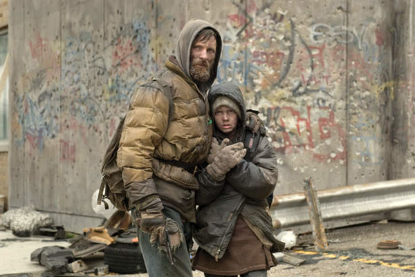

A Estrada
Se Thomas Hobbes fosse vivo, usaria A Estrada como peça argumentativa em Leviatã

Dois anos depois de os irmãos Coen levarem Onde os Fracos Não Têm Vez às telas, outro romance de Cormac McCarthy ganhou sua versão no cinema. A Estrada, vencedor do Prêmio Pulitzer de 2007, foi adaptado por John Hillcoat em 2009, com Viggo Mortensen e Kodi Smit-McPhee nos papéis principais.
Na trama, acompanhamos um pai e um filho que caminham em direção ao sul em um mundo devastado por uma catástrofe que nunca é explicada. Não há governo, polícia, cidades ou comunidades. Restam apenas cinzas, frio, fome e outros sobreviventes, que quase sempre representam uma ameaça.
Em 1651, o filósofo inglês Thomas Hobbes publicou Leviatã, uma das obras mais importantes da filosofia política. Nela, ele pede ao leitor que imagine como seria a vida dos homens sem um poder comum capaz de manter todos em respeito. Hobbes não tinha imagens para ilustrar essa hipótese. Se fosse vivo, talvez usasse A Estrada.
A guerra de todos contra todos
Para Hobbes, os homens são iguais o bastante para que qualquer um possa tirar a vida de qualquer outro. Quando dois desejam a mesma coisa e não há o suficiente para ambos, tornam-se inimigos. Ele aponta três causas principais para o conflito, a competição por recursos, a desconfiança diante do outro e a busca por glória.
Sem um Estado que imponha a ordem, o resultado é o que ele chamou de guerra de todos contra todos. Essa guerra não é feita apenas de batalhas, mas da disposição permanente para lutar. Assim como o mau tempo não é uma chuva isolada, e sim a tendência a chover por vários dias, a guerra é o tempo em que ninguém tem garantia de que não será atacado.
A Estrada é exatamente esse mau tempo permanente. Pai e filho quase nunca estão em combate, mas também nunca estão em paz. Dormem em turnos, escondem o carrinho de compras onde carregam tudo o que têm e se afastam da estrada ao menor ruído de motor. Cada estranho é uma ameaça até prova em contrário, e a prova quase nunca chega.
Um mundo sem indústria, sem comércio, sem arte
No trecho mais conhecido de Leviatã, Hobbes descreve o que se perde quando não há segurança. Não há lugar para o trabalho, porque seu fruto é incerto. Não há cultivo da terra, comércio, construções, conhecimento, artes, letras nem sociedade. E a vida do homem se torna solitária, pobre, sórdida, embrutecida e curta.
O filme parece ter sido construído a partir dessa lista. Nada cresce, as árvores caem sozinhas e os mercados foram saqueados há muito tempo. As casas são cascas vazias, e os únicos objetos de valor são os que ajudam a sobreviver, como um cobertor, um par de sapatos ou uma lata de comida. O menino nasceu depois da catástrofe e só conhece o mundo anterior pelas histórias do pai. A fotografia acinzentada reforça a ideia de que, num mundo sem segurança, até a cor desaparece.
Num mundo sem Leviatã, o outro deixa de ser uma pessoa e passa a ser um recurso.
A cena do porão
De todos os adjetivos de Hobbes, o mais difícil de imaginar é embrutecida. No original, brutish indica uma vida rebaixada à condição de animal. A cena do porão é a que melhor traduz essa palavra, e é também a mais impactante do filme.
Pai e filho entram em uma casa grande em busca de comida e descobrem que outros sobreviventes mantêm pessoas presas ali. Elas não são reféns nem prisioneiros de guerra. Para quem as aprisionou, deixaram de ser pessoas e passaram a ser apenas um recurso para a sobrevivência do grupo.
É nesse ponto que a descrição de Hobbes deixa de ser metáfora. A competição por comida, primeira causa de conflito apontada por ele, chega ao seu limite. Como não existe lei, nada impede que isso aconteça. Hobbes chega a escrever que, nessa condição, cada um tem direito a tudo, até ao corpo do outro. E o mais perturbador é que quem faz isso não são monstros, mas pessoas comuns que fizeram um cálculo de sobrevivência e se organizaram para colocá-lo em prática.
O pai não liberta ninguém. Os donos da casa estão voltando, e ele foge com o filho. A desconfiança e a autopreservação falam mais alto que a compaixão, exatamente como Hobbes previu. Escondido na mata, ele chega a cogitar tirar a vida do próprio filho para poupá-lo de um destino pior. Num mundo sem Leviatã, o gesto mais extremo de um pai pode nascer do amor. Não há imagem mais clara de uma vida sórdida, embrutecida e curta.
O fogo
Se o filme fosse apenas isso, Hobbes venceria sem resistência. Mas A Estrada tem um contrapeso, o menino.
O pai age como um hobbesiano perfeito. Desconfia de todos, recusa dividir comida e aponta a arma para quem se aproxima. Quando um homem rouba suas coisas, ele o alcança e o deixa sem nada na estrada, condenado ao frio. Pela lógica do estado de natureza, é uma resposta racional.
O filho, que nasceu no fim do mundo, deveria ser ainda mais embrutecido. No entanto, é ele quem pergunta se os dois ainda são os caras do bem, quem quer ajudar o velho que encontram pelo caminho e quem sofre pelo ladrão abandonado. A promessa entre pai e filho de carregar o fogo representa a ideia de que algo humano pode sobreviver mesmo sem lei, sem Estado e sem recompensa.
Nesse sentido, A Estrada confirma o diagnóstico de Hobbes e, ao mesmo tempo, o desafia. O filme mostra o que ele só pôde descrever, o medo contínuo, a desconfiança como regra e a ausência de tudo o que a segurança torna possível. Mas, para o filósofo, a moral só nasce com o contrato e com o poder que o garante. O menino sugere outra coisa. Hobbes explicou por que precisamos do Estado, e A Estrada lembra que nem tudo o que nos torna humanos depende dele.